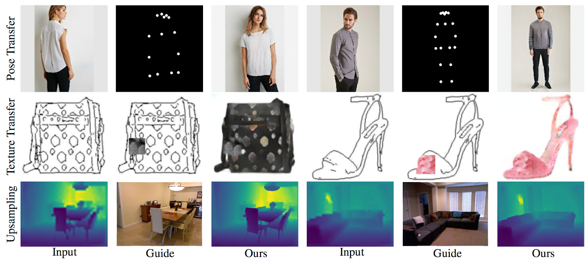

I am a third year Ph.D. student working with Prof. Jia-Bin Huang in the Vision and Learning Laboratory at the department of Electrical and Computer Engineering at Virginia Tech.
August 2018 - Present
Electrical and Computer Engineering Department
August 2016 - May 2018
Electrical and Computer Engineering Department
September 2010 - July 2014
Computer Engineering Department

Guided Image-to-Image Translation with Bi-Directional Feature Transformation
Proceedings of IEEE International Conference on Computer Vision (ICCV), 2019
Paper Project Page Code Poster